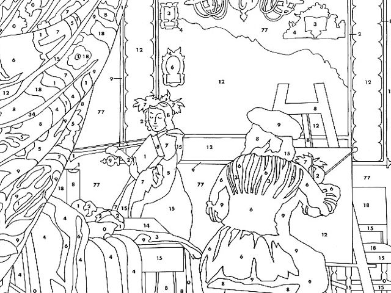

[Image source: ArtLex on Paint by Number]
Munari also had something to say about design. He said, “The designer of today” – today is post-War Europe – “The designer of today re-establishes the long-lost contact between art and the public, between living people and art as a living thing.”
Okay, whatever, bring it down to earth. He continues,
“Instead of pictures for the drawing-room, electric gadgets for the kitchen.”
His point is that what we think of as classic art now had a definite function when it was created. It kept rooms warm, or was used to hold water, or was your way of communicating to people what your family looked like. It was functional and decorative and delightful.
So why shouldn’t our functional objects – our everyday kitchen gadgets and social websites – also be beautiful and delightful in playful, unexpected, inventive and illuminating ways?
So that’s what design can be about, instead of paint by number.
Anyway, I’m kind of in love with Bruno Munari at the moment, and his book “Design as art,” which is why I mention him.
There’s a tremendous bit in the book where he’s talking about the variety of ways to draw a human face. He’s talking in the context of advertising posters I think.